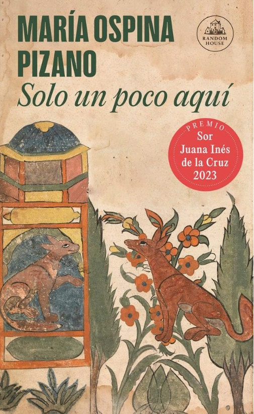

«Nur kurz hier, ohne uns zu begegnen»
María Ospina und das flüchtige Erscheinen von Tieren und Menschen in der Welt

Zwischen verschiedenen Sprachen zu leben bedeutet manchmal auch, neue Orte zu suchen, an denen man eine «Komfortsprache» nutzen kann (in meinem Fall Italienisch, Spanisch und Englisch, in dieser Reihenfolge). Oder anders gesagt: neue Orte, an denen man für ein paar Stunden der vollständigen Immersion in eine Sprache entkommen kann, die man zwar beherrscht, die man aber immer noch als schwierig empfindet und die deshalb eine ständige und anstrengende kognitive Herausforderung darstellt (in meinem Fall Schweizerdeutsch).
Auf dieser Suche sind meine Freundin B. und ich auf eine unabhängige Buchhandlung in Zürich und auf eine ihrer Veranstaltungen gestossen: El Club de Lectura, einen Lesekreis für lateinamerikanische Literatur. Neugierig sind wir zu einem der Treffen gegangen: B. mit dem Wunsch, etwas Neues über die Literatur von Orten zu entdecken, die zu ihren eigenen Wurzeln gehören; ich angezogen von der Möglichkeit, mich in einer vertrauten Sprache zu unterhalten; und wir beide fasziniert von der Möglichkeit, ein Buch kennenzulernen, das uns bisher noch nicht begegnet war.
Das Buch, über das gesprochen wurde, war «Solo un poco aquí» von María Ospina Pizano. Sie ist eine kolumbianische Autorin, was mich besonders interessiert, weil ich trotz meiner Leidenschaft fürs Lesen nur selten südamerikanische Autorinnen und Autoren kennengelernt habe. Einerseits bin ich in Italien ausgebildet worden, wobei der Schwerpunkt vor allem auf der italienischen und europäischen Literatur lag; andererseits bin ich einigen lateinamerikanischen Schriftstellern eher zufällig begegnet und wollte mich schon immer intensiver mit ihrem Zugang zur Literatur beschäftigen. Vor allem, weil ich zwischen den Zeilen ihrer Texte kulturelle Unterschiede erahne, die ich bisher noch nicht genau benennen konnte.
Ich muss gestehen, dass ich Ospinas Buch schwierig zu lesen fand. Der Stil der Autorin ist eine eigentümliche Mischung, weil sie auf derselben Seite wissenschaftliche Genauigkeit (wenn sie Geschichten über Tiere aus der Perspektive eines menschlichen Beobachters erzählt) mit poetischen Höhenflügen (bei der Wahl von Wörtern und Metaphern) verbindet. Ich fand das Buch daher ausgesprochen anders als das, was ich gewohnt bin: weit entfernt von klassischen Fabeln (auch wenn es vielleicht Spuren davon bewahrt?), weit entfernt von der klassischen Struktur eines Romans und ausgesprochen politisch, wenn es anhand der Geschichten einiger Tiere (einer Hündin, eines Stachelschweins, eines kleinen Vogels, eines Insekts) die ökologischen Katastrophen anprangert, die von den Menschen verursacht werden.
Die Wahrheit? Ich fand es interessant, aber auch repetitiv. Ich hatte gehofft, darin mehr «präkolumbianische kulturelle Wurzeln» zu finden, die ich jedoch nicht erkennen konnte. Und ich hatte gehofft, im Lesekreis jemanden zu finden, der mich ein wenig bei der Entdeckung dieser Autorin hätte anleiten können – so, wie es ein Experte oder eine Literaturlehrerin tun könnte.
Ich habe allerdings einige interessante Anregungen gefunden: Zum Beispiel fällt in diesem Buch die völlige Abwesenheit von Kommunikation zwischen Menschen und Tieren auf. Männer und Frauen beobachten Tiere, interagieren mit ihnen oder gehen an ihnen vorbei, ohne sie wirklich zu sehen; manchmal möchten sie sie retten, manchmal möchten sie sie besitzen; manchmal lieben sie sie, manchmal bleiben sie gleichgültig. Manchmal teilen sie ein Schicksal der Migration oder der Einsamkeit. Aber in allen Fällen gelingt es ihnen nicht, die Tiere zu verstehen oder mit ihnen zu kommunizieren. Ich glaube, dass die Autorin hier sehr gut darin ist, uns zu zeigen, dass wir alle Teil derselben Welt sind und dass auch nichtmenschliche Wesen das Recht haben zu leben; dass wir aber mit unserem Anspruch, zu regulieren, zu entscheiden, zu töten und zu besitzen … ohne überhaupt zu verstehen, ein ziemliches Chaos anrichten.
So habe ich das Buch mit dem bitteren Gefühl geschlossen, dass, wenn mir Project Hail Mary wegen des Themas der Begegnung mit dem Anderen gefallen hatte, der Andere hier niemals wirklich begegnet wird. Hier ist der Andere nur eine flüchtige Erscheinung in der Welt (solo un poco aquí, eben: das bedeutet Nur kurz hier), genau wie wir, aber wir nehmen es nicht wahr. Wir sind einander nahe, teilen denselben Raum und manchmal sogar dasselbe Schicksal, und doch sehen wir einander weiterhin nicht wirklich. Vielleicht sollten wir lernen, mit anderen Augen zu schauen, Präsenzen wahrzunehmen, die wir gewohnt sind zu übersehen. Aber welche Augen brauchen wir dafür?